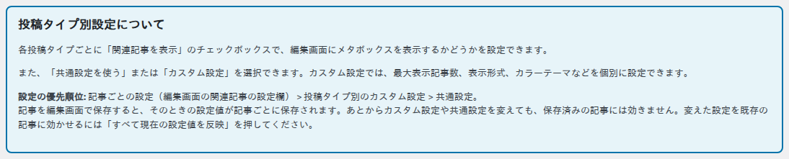
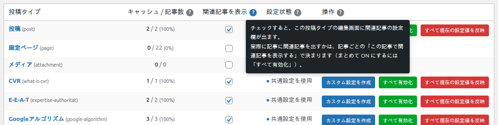
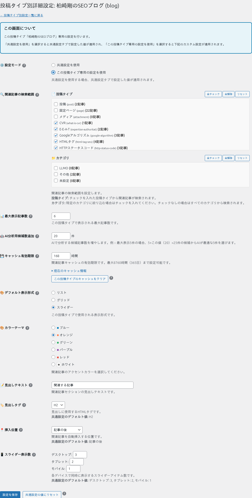

投稿タイプ別設定
「📋 投稿タイプ別設定」タブでは、投稿タイプ（投稿・固定ページ・カスタム投稿タイプ）ごとに、関連記事の設定欄を出すか、専用の初期値（カスタム設定）を使うかを決めます。全記事をまとめて ON にしたり、記事に残った設定をまとめて消したりするのもこの画面です。

投稿タイプの一覧表

| 列 | 説明 |
|---|---|
| 投稿タイプ | 名前をクリックすると、その投稿タイプの記事一覧を開きます。 |
| キャッシュ / 記事数 | 関連記事を作り終えて保存してある記事の数 / 公開中の記事の数です。キャッシュは記事が表示されたときに作られるので、表示されていない記事は数に入りません。 |
| 関連記事を表示 | チェックすると、その投稿タイプの編集画面に関連記事の設定欄が出ます。実際に記事に関連記事を出すかは、記事ごとの「この記事で関連記事を表示する」で決まります。変えたら「表示設定を保存」を押します。 |
| 設定状態 | 「カスタム設定」はその投稿タイプ専用の値、「共通設定を使用」は共通設定タブの値を使っていることを表します。 |
| 操作 | 下の 3 つのボタンです。「関連記事を表示」にチェックが入っている投稿タイプにだけ表示されます（チェックを変えるとすぐに出たり消えたりします）。 |

操作ボタン

| ボタン | 何が起きるか |
|---|---|
| 設定を編集 / カスタム設定を作成 | その投稿タイプのカスタム設定画面を開きます（下の「カスタム設定画面」）。 |
| すべて有効化 | その投稿タイプの今ある全記事で「この記事で関連記事を表示する」を ON にします。表示件数・範囲・色など、ほかの設定は変えません。これから作る記事は OFF で始まります。 |
| すべて現在の設定値を反映 | その投稿タイプの全記事で、記事ごとに保存された設定と関連記事のキャッシュを消し、今のカスタム設定（なければ共通設定）に合わせます。「この記事で関連記事を表示する」の ON/OFF はそのままです。押すと確認のダイアログが出ます。取り消せません。 |
カスタム設定を変えたのに記事に効かないとき
記事に設定が残っているのが原因です。カスタム設定を保存したあと、赤い「すべて現在の設定値を反映」を押してください。くわしくは「設定の優先順位と反映」。
カスタム設定画面
「設定を編集」または「カスタム設定を作成」で開きます。「この投稿タイプ専用の設定を使用」を選ぶと、共通設定と同じ項目をこの投稿タイプだけの値で設定できます。

| 項目 | 説明 |
|---|---|
| ⚙️ 設定モード | 「共通設定を使用」なら共通設定タブの値を、「この投稿タイプ専用の設定を使用」なら下の値をこの投稿タイプに使います。 |
| 🔍 関連記事の検索範囲 | この投稿タイプの記事で、関連記事の候補にする投稿タイプ・カテゴリです。 |
| 📊 最大表示記事数 | この投稿タイプの記事に表示する関連記事の数です。 |
| 🤖 AI分析用候補数追加 | GPT を使う方式で、GPT に渡す候補の追加件数です。 |
| 💾 キャッシュ有効期限 | この投稿タイプの記事で、関連記事を保存しておく時間です。「この投稿タイプのキャッシュをクリア」で、この投稿タイプの記事のキャッシュだけを消せます。 |
| 🎨 デフォルト表示形式 / カラーテーマ | この投稿タイプの記事の表示形式と色です。 |
| 📝 見出しテキスト / 🏷️ 見出しタグ | この投稿タイプの記事の見出しの文字とタグです。 |
| 📍 挿入位置 | この投稿タイプの記事で、関連記事を入れる位置です。 |
| 📱 スライダー表示数 | この投稿タイプの記事で、スライダーに一度に見せる数です。 |
| ボタン | 説明 |
|---|---|
| 設定を保存 | この画面の値を保存します。 |
| 共通設定の値にリセット | この投稿タイプのカスタム設定を削除し、共通設定を使うように戻します。記事ごとに保存された設定は消えません（消すには一覧表の「すべて現在の設定値を反映」）。 |
v1.0.4 から効くようになった項目
カスタム設定の「キャッシュ有効期限」「AI分析用候補数追加」「スライダー表示数」は、v1.0.3 までは保存されても使われず、共通設定の値が使われていました。v1.0.4 からはカスタム設定の値が使われます。